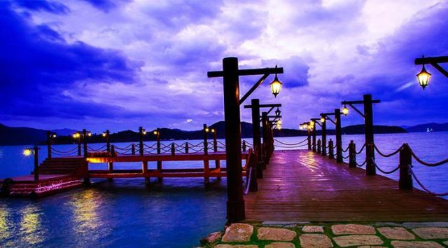

2. Tháp Bà Po Nagar
Tháp Bà Po Nagar là ngôi đền Chăm Pa nằm trên đỉnh một ngọn đồi nhỏ cao khoảng 10 -12 m, cách trung tâm thành phố khoảng 2 km về phía Bắc. Tên gọi “Tháp Po Nagar” được dùng để chỉ chung cả công trình kiến trúc này, nhưng thực ra đây chỉ là tên gọi của ngọn tháp lớn nhất, cao khoảng 23 m, tọa lạc tại tầng thứ 3 của công trình này.
Tháp Bà Po Nagar gồm 3 tầng với tòa tháp nằm ở tầng 3, tầng cao nhất.
Những ngôi tháp được xây dựng theo kiến trúc tháp Chăm.

Tháp Bà Po Nagar là một trong những địa điểm tham quan ở Nha Trang nổi tiếng nhất.
Khu di tích tháp Bà Po Nagar là một địa điểm tham quan ở Nha Trang mà bạn nên đến là vì đây là một trong những công trình thuộc quần thể kiến trúc văn hóa Chăm Pa có quy mô lớn nhất còn sót lại ở miền Trung, Việt Nam. Đến tháp Bà, bạn còn có dịp được nghe kể về những truyền thuyết xung quanh địa điểm này.
Màu xanh của cây cối xung quanh trộn lẫn với màu đỏ đất của gạch là hai yếu tố làm nên một bức ảnh đẹp.
Tảng đá lớn chụp phóng ra tòa tháp là nơi chụp ảnh ưa thích của du khách.
Du khách đến tháp Bà còn được chiêm ngưỡng vũ điệu dân tộc người Chăm vô cùng đặc sắc.
Về truyền thuyết hình thành tháp Bà Po Nagar xuất hiện nhiều dị bản nhưng nổi tiếng nhất là câu chuyện về một vị nữ thần có tên gọi là Po Nagar, mà người Việt thường gọi là Thiên Y Thánh Mẫu Ana, được sinh ra từ mây và biển. Bà là người đã tạo ra mùa màng, cây cối, lúa gạo, dạy người dân cách cày cấy, dệt sợi nên rất được yêu mến và tôn trọng. Sau khi bà về trời, họ lập ra tháp Bà để thờ phụng, thể hiện lòng biết ơn. Mỗi năm, vào ngày 23/3 âm lịch đều tổ chức lễ dâng hoa.
3. Suối Ba Hồ
Suối Ba Hồ cách trung tâm thành phố Nha Trang khoảng 25 km về phía Bắc. Suối bắt nguồn từ đỉnh Hòn Son, cao trên 660 m. Đây là một địa điểm tham quan ở Nha Trang thu hút lữ khách nhờ vào vẻ đẹp tự nhiên, hiền lành của mình.
Khó có thể tưởng tượng được ở gần Nha Trang lại có một chốn phong cảnh hữu tình như thế này.
Nằm trên núi, được rừng bao bọc nhưng suối Ba Hồ không dữ dội mà chỉ chảy những dòng nước dịu êm.
Tên gọi Ba Hồ được xuất hiện vì “cấu trúc” kỳ lạ của suối. Từ đỉnh, suối chảy theo sườn núi để đổ ra biển nhưng trên đường chảy thì có 3 lần suối phình to ra và tạo thành ba chiếc hồ vô cùng xinh đẹp, rộng lớn với dòng chảy hiền hòa. Tên gọi của ba hồ là Hồ Nhất, Hồ Nhì và Hồ Ba. Đặc biệt hơn nữa là cảnh vật mỗi hồ mỗi khác. Thiên nhiên bao bọc quanh hồ có khi là cánh rừng, có khi lại là những vách đá cao sững sờ.
Mỗi hồ lại có cảnh quan khác nhau.

Các hồ được nối với nhau bằng khe suối cheo leo. Nếu bạn muốn tham quan cả ba hồ thì nên chuẩn bị sẵn một đôi giày, găng tay và sức khỏe tốt vì các hồ được kiến tạo ngang lưng núi, cách duy nhất để đi cả ba hồ chính là phải leo núi. Tuy thế, đường núi tuy cao nhưng không quá dốc, rừng thoáng và cứ đi theo hướng suối chảy thì bạn sẽ không sợ lạc. Khi tắm suối, bạn cũng nên cẩn thận vì có đá ngầm.
4. Cầu Gỗ Điệp Sơn
Ở Điệp Sơn không chỉ có con đường cát giữa biển mới có thể “sống ảo” chất và chuẩn đâu, còn có một cây cầu gỗ vững chắc cũng đâm ra biển mà bạn không cần phải canh thủy triều rút mới chạy ra chụp choẹt được. Cây cầu này gọi là cầu Ngọc Trai, nổi tiếng với danh xưng là “cầu tình yêu” hay là cây cầu vô cực, từ bờ phóng tầm mắt ra sẽ không thể thấy điểm cuối.
Cầu gỗ ở Điệp Sơn còn có tên gọi khác là cầu Ngọc Trai.
Trời xanh, mây trắng, nước trong, còn chất liệu nào tuyệt vời hơn để tạo nên một bức ảnh trăm like?
Cây cầu Ngọc Trai ở Nha Trang này kéo dài khoảng hơn 300 m, do một công ty xây dựng thành nên khi đến check-in, bạn nhớ giữ gìn vệ sinh và không chơi quá trớn làm hư hỏng cây cầu để mọi người còn có nơi để sống ảo nhé. Cầu Ngọc Trai nằm ở thôn Tân Đức, xã Vạn Lương, huyện Vạn Ninh, từ quốc lộ 1A đi vào thì cách trung tâm Vạn Giã 3 km.
4. Bãi đá rêu
Đây tuy không phải là một trong những địa điểm tham quan ở Nha Trang nổi tiếng nhưng lại là nơi chụp ảnh cưới có tiếng. Ngay giữa trung tâm thành phố biển Nha Trang nổi lên một bãi đá rêu dài khoảng 100 m với nhiều hình thù đá phủ rêu khác nhau, vô cùng đẹp mắt.
Tầm chiều tà, khi thủy triều rút, bãi rêu xanh hiện ra, nhìn lớp rêu phủ đều vân nhau vô cùng mịn màng, lên ảnh đẹp khỏi bàn cãi luôn. Bãi rêu này nằm ở phía chân cầu Trần Phú ngay trung tâm thành phố. Hiện tượng rêu phủ này chỉ xuất hiện một vài lần trong năm, đặc biệt vào mùa nước lớn, thủy triền lên kéo theo rong rêu từ dưới biển lên.
5. Đảo Hòn Mun
Đây là một hòn được mệnh danh là một hòn đảo thơ mộng nhất Nha Trang. Hòn đảo chinh phục bất kì trái tim khách du lịch nào đặt chân đến nơi đây bởi bãi cát trắng trải dài bất tận, bãi biển xanh rờn với những tổ yến hoang sơ cheo leo trên vách đá.
Đến với đảo Hòn Mun là đến với làn nước xanh trong, bát ngát, đến với những bãi san hô phong phú và đầy màu sắc. Với sự phong phú trong hệ sinh thái như vậy, đảo Hòn Mun đã được Quỹ Động vật hoang dã thế giới đánh giá là khu vực đa dạng sinh vật biển bậc nhất Việt Nam.
Đến với đảo Hòn Mun là đến với rất nhiều dịch vụ thú vị trên biển như: Bar nổi trên mặt biển, lặn biển ngắm san hô hay đi khám phá Hòn Mun bằng tàu đáy kính.
6. Đảo Hòn Tằm
Đảo Hòn Tằm nằm cách thành phố Nha Trang 7 km, là một điểm du lịch Nha Trang, trải nghiệm nhất định bạn phải ghé qua khi tới với thành phố. Đảo Hòn Tắm đẹp mộng mơ với những hàng dừa chạy dọc trên bãi biển xanh ngát.
Du khách có thể nằm trên ghế, lắng nghe tiếng sóng biển hòa với tiếng lá dừa lọ vào nhau nghe xào xạc thật êm tai hay dành trọn kỳ nghỉ tại khách sạn Hòn Tằm có view đẹp, nhìn ra biển. Không những vậy, du khách còn được trải nghiệm những trò chơi trên biển cực kì thú vị như nhảy dù trên biển, mô tô nước, lướt ván,… Với sự đầu tư về du lịch hoành tráng như vậy, chắc chắc Hòn Tằm sẽ đem lại cho bạn những trải nghiệm mùa hè cực kì đáng nhớ.
7. Vịnh Vân Phong
Nằm cách khá xa trung tâm thành phố (khoảng 40km về phía Bắc) nên Vịnh Vân Phong sở hữu cho mình một vẻ đẹp vô cùng hoang sơ, mộc mạc, bình yên đến lạ. Vẫn là bãi biển xanh trong đến lay động lòng người kia, nhưng Vân Phong không mang cái vẻ ồn ào, đông đúc của thành phố mà lặng yên hơn, trầm mặc hơn, bí ẩn hơn đợi người ta khám phá.

8. Đảo Bình Ba
Đảo Bình Ba Khánh Hòa, vùng đất quen thuộc gắn liền với tên gọi vui “đảo tôm hùm” với cảnh quan hoang sơ nhưng trù phú. Đảo đang được
Ấn tượng đầu tiên của du khách khi tới đây chính là một hòn đảo hoang sơ với nhiều bãi biển đẹp, nước xanh, cát trắng, đẹp đến ngây người. Vì chưa được khai thác du lịch nhiều, nên sự nguyên sơ của đảo tạo cho du khách cảm giác bình yên, thư thái rất phù hợp cho hoạt động nghỉ ngơi sau những ngày dài mệt mỏi với công việc và cuộc sống thường nhật. Bên bờ biển thanh bình là những bãi tắm tuyệt đẹp, vắng người và chỉ có biển nước mây trời, xanh một màu thanh bình.
Đẹp nhất phải kể đến những khoảnh khắc bình minh hay hoàng hôn huyền ảo tại ba bãi biển nổi tiếng nhất đảo Bình Ba là Bãi Nồm, Bãi Nhà Cũ và Bãi Chướng. Du khách có thể tự do lựa chọn hoặc trải nghiệm cả ba bãi tắm tuyệt vời này. Một lưu ý nhỏ, mà bạn cũng cần biết trước khi tới đây đó là khách sạn tại Bình Ba không có nhiều, bạn nên đặt phòng trước khi ra đảo để tránh mất nhiều thời gian tìm phòng.
Nguồn: Traveloka.com